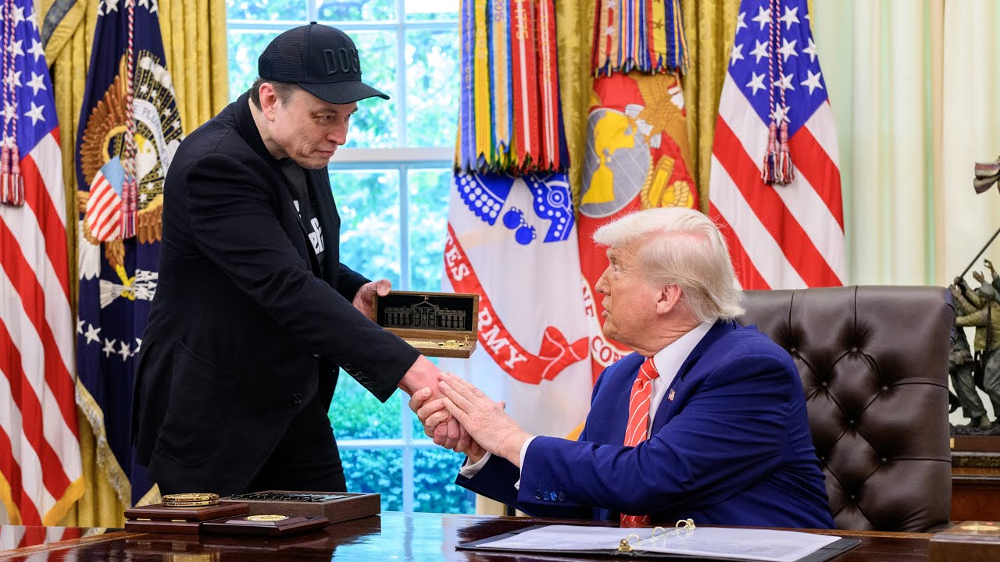

【DOGE正在崛起！谢谢你，埃隆！🇺🇸】
Summary: Elon Musk fully supports the creation of a government efficiency commission to audit federal spending, eliminate fraud, and implement reforms, aiming to reduce inflation, lower costs, and save taxpayer money.
摘要： 埃隆·马斯克全力支持成立政府效率委员会，审计联邦支出，消除欺诈并实施改革，旨在降低通胀、减少开支并节省纳税人资金。

⏱️ Estimated Reading Time: 3 min
Elon Musk has given me his complete and total endorsement.
埃隆·马斯克给予了我他的全力支持。
I will create a government efficiency commission tasked with conducting a complete financial and performance audit of the entire federal government and making recommendations for drastic reforms.
我将成立一个政府效率委员会，负责对整个联邦政府进行全面的财务和绩效审计，并提出大刀阔斧的改革建议。
As the first order of business, this commission will develop an action plan to totally eliminate fraud and improper payments within 6 months.
作为首要任务，该委员会将制定一项行动计划，在6个月内彻底消除欺诈和不当支付。
This is an order creating and implementing the department of governmental efficiency known as doge.
这是一项命令，创建并实施名为“doge”的政府效率部门。
That's a big one.
这是一个重大举措。
I have created the brand new Department of Government Efficiency.
我已经创建了全新的政府效率部门。
Go.
开始吧。
Perhaps you've heard of.
也许你已经听说了。
By slashing all of the fraud, waste, and theft we can find, we will defeat inflation, bring down mortgage rates, lower car payments and grocery prices, protect our seniors, and put more money in the pockets of American families.
通过削减我们能发现的所有欺诈、浪费和盗窃行为，我们将战胜通胀，降低抵押贷款利率、汽车贷款和食品价格，保护老年人，并让美国家庭的口袋里有更多钱。
That is going to do more to unleash innovation, to unleash economic prosperity.
这将进一步释放创新，释放经济繁荣。
when you don't have this crushing bureaucracy that answers to nobody sitting on top of the American people.
当你不再有这种压在美国人民头上、不对任何人负责的官僚主义时。
Well, we're talking about hundreds of millions of dollars of money that's going to places where it shouldn't be going.
我们谈论的是数亿美元的资金流向了不该流向的地方。
I ran on this and the people want me to find it and I've had a great help with Elon Musk who's been terrific.
我以此竞选，人民希望我找到这些问题，而埃隆·马斯克给了我极大的帮助，他非常出色。
We are going line by line when it comes to the federal government's books.
我们将逐行审查联邦政府的账目。
American taxpayers will see significant savings because of that effort.
由于这一努力，美国纳税人将看到显著的节省。
These are systematic, programmatic reforms that we're talking about here.
我们在这里谈论的是系统性的、计划性的改革。
People work their whole lives and pay taxes, yet they find out that they've been giving $2 million to Guatemala for sex changes.
人们一生都在工作并纳税，却发现他们的钱被用于向危地马拉提供200万美元用于变性手术。
It's outrageous.
这太离谱了。
We've been overwhelmed with the positive response uh of Elon's efforts.
我们对埃隆的努力所获得的积极反响感到非常振奋。
There's going to be so much savings because of what Doge is doing that you should be really really excited about it.
由于Doge的举措，将节省大量资金，你应该对此感到非常非常兴奋。
I'm very proud of the job that this group are doing.
我对这个团队的工作感到非常自豪。
they're doing at at my insistence.
他们是在我的坚持下进行这项工作。
It would be a lot easier not to do it, but we have to take some of these things apart to find the corruption.
不做这些事会容易得多，但我们必须拆解这些问题以发现腐败。
We found tremendous corruption.
我们发现了大量的腐败。
Thank you, Ela.
谢谢你，埃拉。